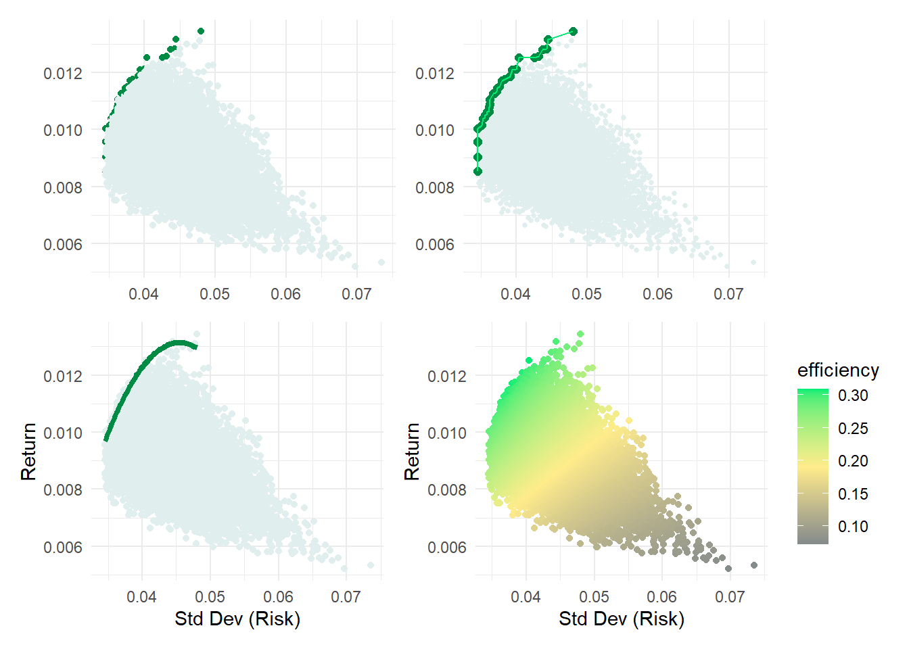

library(tidyverse)
library(tidyquant)
# library(dplyr); library(tidyr); library(purrr)
# library(ggplot)Contents
- Define the sets of stocks/indices
- Retrieve returns for each periodicity
- Analyze: add the analysis list column
- Setup the simulation
- Run the simulation
- Visualize
load libraries
Define the SETS of stocks/indices
The container in this approach is stock_sets, a dataframe the we initialize (our TOC) with three columns:
- set_id
- description
- symbols: a list of tickers
sector_3eft_list <- c( "XLK", "XLV", "XLP") # Tech, Health, Staples
# sector_4etf_list <- c( "XLK", "XLV", "XLP", "XLE",) # Tech, Health, Staples, Energy
sector_5etf_list <- c( "XLK", "XLV", "XLP", "XLE", "XLF") # Tech, Health, Staples, Energy, Financials
# sector_7etf_list <- c(sector_5etf_list, "XLI", "XLU")
sector_11etf_list <- c("XLK", # Technology
"XLV", # Health Care
"XLF", # Financials
"XLY", # Consumer Discretionary
"XLP", # Consumer Staples
"XLE", # Energy
"XLU", # Utilities
"XLI", # Industrials
"XLB", # Materials
"XLRE", # Real Estate
"XLC") # Communication Services
size_etfs <- c("SPY", "MDY", "IWM") # Large, Mid, Small
# size_style_etfs <- c("IWF", # Large-Cap Growth
# "IWD", # Large-Cap Value
# "SPY", # Large-Cap Blend
# "IWP", # Mid-Cap Growth
# "IWS", # Mid-Cap Value
# "MDY", # Mid-Cap Blend
# "IWO", # Small-Cap Growth
# "IWN", # Small-Cap Value
# "IWM") # Small-Cap Blend
stock_sets <- tibble(
set_id = c("3_sectors",
"5_sectors",
"11_sectors",
"3_sizes"),
description = c("3 Sectors picked by GPT-4: Tech, Health, Staples",
"5 Sectors picked by GPT-4: above + Energy + Financials",
"All 11 Sectors",
"Size: Large, Mid, Small--Blend"),
# this is a list column, see https://adv-r.hadley.nz/vectors-chap.html#list-columns
symbols = list(sector_3eft_list, sector_5etf_list, sector_11etf_list, size_etfs)
)
date_start <- "2013-01-01"
date_end <- "2023-11-17"Retrieve returns for each periodicity; aka, frequency
For each SET of tickers, get_returns will retrieve log returns for each of three periods:
- daily
- weekly
- monthly
Then we will call the get_returns function via map (my favorite function) to create a new list column called nested_data. Each row of nested_data will contain a list of three dataframes, one for each period. These dataframes will contain the log returns for each ticker in the set.
get_returns <- function(symbols, start_date, end_date) {
mult_stocks <- tq_get(symbols, get = "stock.prices",
from = start_date, to = end_date)
periods <- c("daily", "weekly", "monthly")
returns_list <- lapply(periods, function(period) {
mult_stocks |>
group_by(symbol) |>
tq_transmute(select = adjusted,
mutate_fun = periodReturn,
period = period,
type = "log")
})
names(returns_list) <- periods
return(returns_list)
}
# Nest return data for each stock set
stock_sets <- stock_sets |>
mutate(nested_data = map(symbols,
~ get_returns(.x, date_start, date_end)))
print(stock_sets)# A tibble: 4 × 4
set_id description symbols nested_data
<chr> <chr> <list> <list>
1 3_sectors 3 Sectors picked by GPT-4: Tech, Health, Stap… <chr> <named list>
2 5_sectors 5 Sectors picked by GPT-4: above + Energy + F… <chr> <named list>
3 11_sectors All 11 Sectors <chr> <named list>
4 3_sizes Size: Large, Mid, Small--Blend <chr> <named list>Analyze: add the analysis list column
For each set and periodicity, the analysis list column generates:
- vector of volatilities
- vector of average returns
- correlation matrix (diagonal is 1)
- average correlation (as a rough measure of diversification)
perform_analysis <- function(data, returns_column) {
volatilities <- data |>
group_by(symbol) |>
summarise(volatility = sd(.data[[returns_column]], na.rm = TRUE)) |>
ungroup()
avg_returns <- data |>
group_by(symbol) |>
summarise(avg_return = mean(.data[[returns_column]], na.rm = TRUE)) |>
ungroup()
data_wide <- data |>
pivot_wider(names_from = symbol, values_from = .data[[returns_column]])
corr_matrix <- cor(select(data_wide, -date), use = "complete.obs")
avg_corr <- mean(corr_matrix[lower.tri(corr_matrix)])
return(list(volatilities = volatilities, avg_returns = avg_returns, corr_matrix = corr_matrix, avg_corr = avg_corr))
}
# Applying the perform_analysis function to the stock_sets
stock_sets <- stock_sets |>
mutate(analysis = map(nested_data, ~ {
data_daily <- .x$daily
data_weekly <- .x$weekly
data_monthly <- .x$monthly
analysis_daily <- perform_analysis(data_daily, "daily.returns")
analysis_weekly <- perform_analysis(data_weekly, "weekly.returns")
analysis_monthly <- perform_analysis(data_monthly, "monthly.returns")
list(daily = analysis_daily, weekly = analysis_weekly, monthly = analysis_monthly)
}))
# Examine data structure
print(stock_sets) # Notice the analysis list column has been added# A tibble: 4 × 5
set_id description symbols nested_data analysis
<chr> <chr> <list> <list> <list>
1 3_sectors 3 Sectors picked by GPT-4: Tech,… <chr> <named list> <named list>
2 5_sectors 5 Sectors picked by GPT-4: above… <chr> <named list> <named list>
3 11_sectors All 11 Sectors <chr> <named list> <named list>
4 3_sizes Size: Large, Mid, Small--Blend <chr> <named list> <named list>glimpse(stock_sets)Rows: 4
Columns: 5
$ set_id <chr> "3_sectors", "5_sectors", "11_sectors", "3_sizes"
$ description <chr> "3 Sectors picked by GPT-4: Tech, Health, Staples", "5 Sec…
$ symbols <list> <"XLK", "XLV", "XLP">, <"XLK", "XLV", "XLP", "XLE", "XLF">…
$ nested_data <list> [[<grouped_df[8217 x 3]>], [<grouped_df[1704 x 3]>], [<gr…
$ analysis <list> [[[<tbl_df[3 x 2]>], [<tbl_df[3 x 2]>], <<matrix[3 x 3]>>…stock_sets$analysis[[1]] # first row is the first stock set$daily
$daily$volatilities
# A tibble: 3 × 2
symbol volatility
<chr> <dbl>
1 XLK 0.0138
2 XLP 0.00906
3 XLV 0.0105
$daily$avg_returns
# A tibble: 3 × 2
symbol avg_return
<chr> <dbl>
1 XLK 0.000719
2 XLP 0.000345
3 XLV 0.000484
$daily$corr_matrix
XLK XLV XLP
XLK 1.0000000 0.7254977 0.6357681
XLV 0.7254977 1.0000000 0.7182649
XLP 0.6357681 0.7182649 1.0000000
$daily$avg_corr
[1] 0.6931769
$weekly
$weekly$volatilities
# A tibble: 3 × 2
symbol volatility
<chr> <dbl>
1 XLK 0.0270
2 XLP 0.0194
3 XLV 0.0227
$weekly$avg_returns
# A tibble: 3 × 2
symbol avg_return
<chr> <dbl>
1 XLK 0.00347
2 XLP 0.00167
3 XLV 0.00233
$weekly$corr_matrix
XLK XLV XLP
XLK 1.0000000 0.6976196 0.6515028
XLV 0.6976196 1.0000000 0.7046562
XLP 0.6515028 0.7046562 1.0000000
$weekly$avg_corr
[1] 0.6845929
$monthly
$monthly$volatilities
# A tibble: 3 × 2
symbol volatility
<chr> <dbl>
1 XLK 0.0517
2 XLP 0.0364
3 XLV 0.0399
$monthly$avg_returns
# A tibble: 3 × 2
symbol avg_return
<chr> <dbl>
1 XLK 0.0150
2 XLP 0.00722
3 XLV 0.0101
$monthly$corr_matrix
XLK XLV XLP
XLK 1.0000000 0.6136564 0.5679385
XLV 0.6136564 1.0000000 0.6780583
XLP 0.5679385 0.6780583 1.0000000
$monthly$avg_corr
[1] 0.6198844Here is a class diagram of the stock_sets data structure rendered by DiagrammeR via Graphviz.
Setup the simulation
The get_random_weights function returns a dataframe of random weights. Each column is a set of weights for a single simulation. Each row is the weight for a single stock. The weights are normalized so that they sum to 1.
So I’m starting with an incredibly naive approach to the simulation. I’m going to assume that the expected return for each stock is the average return for that stock over the entire period. I’m also going to assume that the volatility for each stock is the average volatility for that stock over the entire period. Most importantly, the only randomness in the simulation is the weights and they are totally naive because they are independent of the analysis. We can’t expect anything like an efficient frontier from the raw scatterplot. However, this will illustrate the future risk/reward trade-off faced by a “totally naive” investor!
# returns a data frame of random weights
# rows = weight per stock; columns = number of simulations
get_random_weights <- function(num_stocks, num_simulations) {
set.seed(123)
weights_df <- matrix(nrow = num_stocks, ncol = num_simulations)
for (i in 1:num_simulations) {
weights <- runif(num_stocks)
weights_df[, i] <- weights / sum(weights)
}
return(as.data.frame(weights_df))
}
# single simulation: given a set of weights, computes the expected return and volatility
port_sim <- function(exp_returns, volatilities, corr_matrix, weights) {
cov_matrix <- outer(volatilities, volatilities) * corr_matrix
port_variance <- t(weights) %*% cov_matrix %*% weights
port_exp_return <- sum(weights * exp_returns)
return(list(exp_returns = exp_returns,
volatilities = volatilities,
cov_matrix = cov_matrix,
corr_matrix = corr_matrix,
port_variance = port_variance,
port_exp_return = port_exp_return))
}
# runs a port_simulation for each column in the weights_df
run_sims <- function(exp_returns, volatilities, corr_matrix, weights_df) {
simulations <- map(1:ncol(weights_df), ~ {
weights_vector <- weights_df[, .x]
port_sim(exp_returns, volatilities, corr_matrix, weights_vector)
})
return(simulations)
}Run the simulation (on a single set)
# Selecting the desired set (e.g., "Set 1")
select_set <- stock_sets |>
filter(set_id == "5_sectors") |>
pull("analysis")
analyze_set <- select_set[[1]]
analyze_period <- analyze_set$monthly
# Extracting components from the selected set
exp_returns_period <- analyze_period$avg_returns$avg_return
volatilities_period <- analyze_period$volatilities$volatility
corr_matrix_period <- analyze_period$corr_matrix
num_stocks_period <- length(volatilities_period)
num_sims <- 20000 # Set the number of simulations
random_weights_df_period <- get_random_weights(num_stocks_period, num_sims)
sim_results_period <- run_sims(exp_returns_period,
volatilities_period,
corr_matrix_period,
random_weights_df_period)
# Print results of the first simulation
print(sim_results_period[[1]])$exp_returns
[1] 0.004030846 0.008677509 0.015025342 0.007222011 0.010114014
$volatilities
[1] 0.08350623 0.05444006 0.05165270 0.03642462 0.03991410
$cov_matrix
XLK XLV XLP XLE XLF
XLK 0.006973290 0.0027897366 0.0024497012 0.0013125262 0.002137823
XLV 0.002789737 0.0029637200 0.0019066845 0.0008771254 0.001387132
XLP 0.002449701 0.0019066845 0.0026680010 0.0007372934 0.001139679
XLE 0.001312526 0.0008771254 0.0007372934 0.0013267528 0.001034452
XLF 0.002137823 0.0013871321 0.0011396791 0.0010344519 0.001593135
$corr_matrix
XLK XLV XLP XLE XLF
XLK 1.0000000 0.6136571 0.5679384 0.4315132 0.6413965
XLV 0.6136571 1.0000000 0.6780586 0.4423317 0.6383707
XLP 0.5679384 0.6780586 1.0000000 0.3918793 0.5527939
XLE 0.4315132 0.4423317 0.3918793 1.0000000 0.7115231
XLF 0.6413965 0.6383707 0.5527939 0.7115231 1.0000000
$port_variance
[,1]
[1,] 0.001517294
$port_exp_return
[1] 0.009078192results_df_period <- map_dfr(sim_results_period, ~ data.frame(Exp_Return = .x$port_exp_return,
Std_Dev = sqrt(.x$port_variance)))
# View summarized results for daily returns
print(head(results_df_period)) Exp_Return Std_Dev
1 0.009078192 0.03895245
2 0.010822326 0.03906639
3 0.008376929 0.04953396
4 0.007454897 0.04938544
5 0.008529608 0.04357777
6 0.008795629 0.04981343results_df <- results_df_periodVisualize the results
library(patchwork)
results_df <- results_df |>
arrange(Std_Dev) |>
mutate(is_efficient = Exp_Return >= cummax(Exp_Return))
efficient_portfolios <- results_df |>
arrange(Std_Dev) |>
mutate(cummax_return = cummax(Exp_Return)) |>
filter(Exp_Return >= cummax_return)
efficient_model <- lm(Exp_Return ~ poly(Std_Dev, 2), data = efficient_portfolios)
p1 <- ggplot(results_df, aes(x = Std_Dev, y = Exp_Return, color = is_efficient)) +
geom_point() +
scale_color_manual(values = c("azure2", "springgreen4")) +
theme_minimal() +
theme(
axis.title = element_blank(),
legend.position = "none"
)
p2 <- ggplot(results_df, aes(x = Std_Dev, y = Exp_Return)) +
geom_point(aes(color = is_efficient), size = 1) + # Default size for all points
geom_point(data = filter(results_df, is_efficient),
aes(color = is_efficient), size = 2) + # Larger size for efficient points
scale_color_manual(values = c("azure2", "springgreen4")) +
theme_minimal() +
geom_line(data = efficient_portfolios, aes(x = Std_Dev, y = Exp_Return), colour = "springgreen2") +
theme(
axis.title = element_blank(),
legend.position = "none"
)
p3 <- ggplot(results_df, aes(x = Std_Dev, y = Exp_Return)) +
geom_point(color = "azure2") +
geom_smooth(data = efficient_portfolios, method = "lm", formula = y ~ poly(x, 2),
se = FALSE, colour = "springgreen4", linewidth = 1.5) +
labs(x = "Std Dev (Risk)",
y = "Return") +
theme_minimal()
# Calculate a color metric based on Exp_Return and Std_Dev
RiskFree_temp <- 0.0
results_df <- results_df %>%
mutate(efficiency = (Exp_Return - RiskFree_temp)/ Std_Dev)
# Create a scatterplot with color gradient based on the color_metric
# p4 <- ggplot(results_df, aes(x = Std_Dev, y = Exp_Return, color = color_metric)) +
# geom_point() +
# scale_color_gradient2(low = "azure3", high = "springgreen1", mid = "yellow",
# midpoint = median(results_df$color_metric)) +
# theme_minimal() +
# labs(color = "Color Metric")
# Assuming results_df and color_metric are already defined appropriately
p4 <- ggplot(results_df, aes(x = Std_Dev, y = Exp_Return, color = efficiency)) +
geom_point() +
scale_color_gradientn(colors = c("azure4", "lightgoldenrod1", "springgreen2"),
values = scales::rescale(c(min(results_df$efficiency),
max(results_df$efficiency)))) +
theme_minimal() +
labs(x = "Std Dev (Risk)",
y = "Return",
color = "efficiency")
(p1 + p2) / (p3 + p4 )